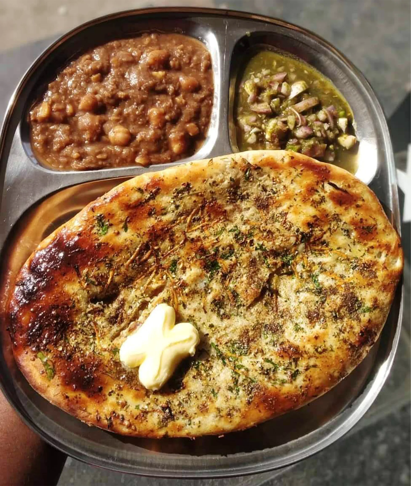

Amritsari Kulcha

Ingredients
For the dough:
- 3 cups all-purpose flour
- 3 cups all-purpose flour
- 1 teaspoon baking powder
- 1 teaspoon sugar
- 1/2 teaspoon salt
- 1/4 cup yogurt
- 1/4 cup milk
- 2 tablespoons oil
- Water, as needed
For the stuffing:
- For the stuffing:
- 3 medium-sized potatoes, boiled and mashed
- 1 onion, finely chopped
- 2 green chilies, finely chopped
- 1 teaspoon ginger paste
- 1 teaspoon garlic paste
- 1 teaspoon red chili powder
- 1/2 teaspoon turmeric powder
- 1 teaspoon cumin powder
- 1 teaspoon chaat masala
- Salt to taste
- Fresh coriander leaves, chopped
Instructions
- In a large mixing bowl, combine the all-purpose flour, baking powder, sugar, and salt. Mix well.
- Add yogurt, milk, and oil to the flour mixture. Mix everything together.
- Gradually add water and knead the dough until it becomes smooth and pliable. Cover the dough with a damp cloth and let it rest for about 2 hours.
- In a separate bowl, combine the mashed potatoes, chopped onion, green chilies, ginger paste, garlic paste, red chili powder, turmeric powder, cumin powder, chaat masala, salt, and fresh coriander leaves. Mix well to make the stuffing.
- Divide the dough into small portions and roll them into balls. Flatten each ball and place a spoonful of the potato stuffing in the center.
- Gather the edges of the dough and seal it tightly to form a stuffed ball. Flatten the ball with your hands.
- Preheat a tawa (griddle) or a non-stick pan over medium heat. Place the stuffed kulcha on the hot tawa.
- Cook one side until small bubbles start to appear, then flip it over and cook the other side until golden brown spots appear.
- Brush melted butter on the cooked kulcha and sprinkle fresh coriander leaves on top. Repeat the process for the remaining dough and stuffing.
- Serve the Amritsari Kulchas hot with chole (spiced chickpeas), raita (yogurt dip), or pickle.